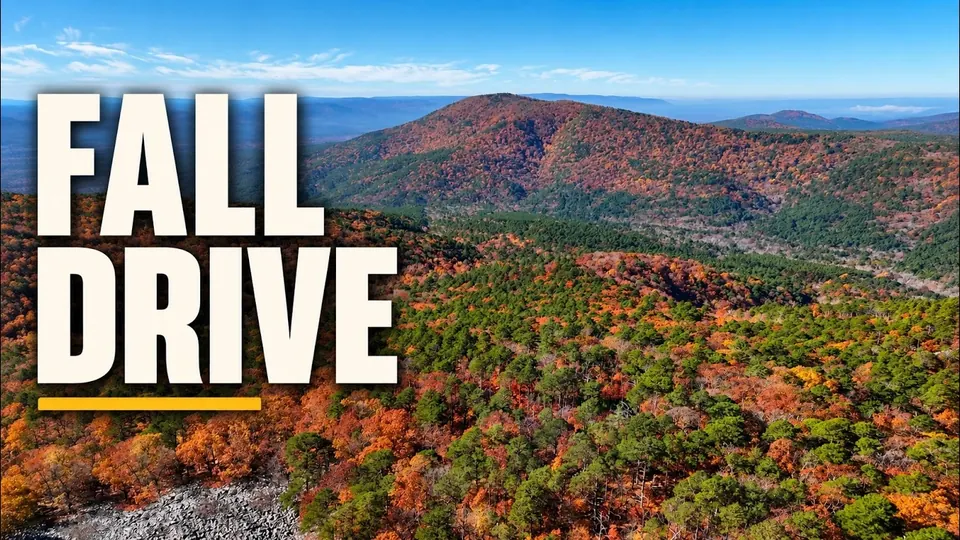

Talimena Scenic Byway
Oklahoma and Arkansas

A journey
12 films and shorts from places named in the titles.
The places
12 films and shorts from places named in the titles.
The map marks the places that can be located from those titles; it is not a record of one continuous drive.
The map loads when you scroll to it. The stops are listed below.
Map data © OpenStreetMap
Step through the stops
Oklahoma and Arkansas
Oklahoma
Chickasha, Oklahoma
Arkansas
Arkansas
Arkansas
Arkansas
Arkansas
Alliance, Nebraska
Wyoming
Along the way
Fort Smith, Arkansas, United States
Listed as: Calico Country
American
2401 South 56th Street, Fort Smith, AR 72903
Open
The films